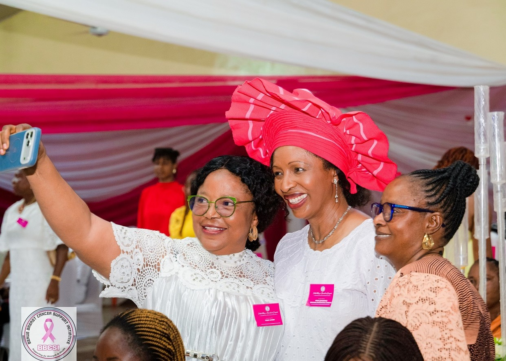
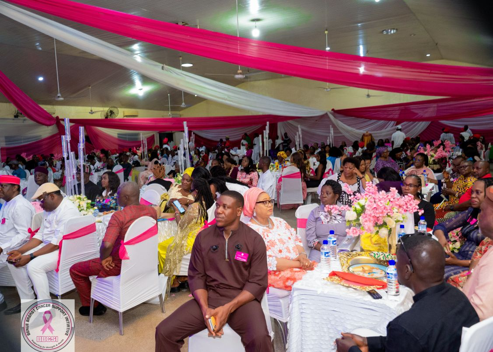
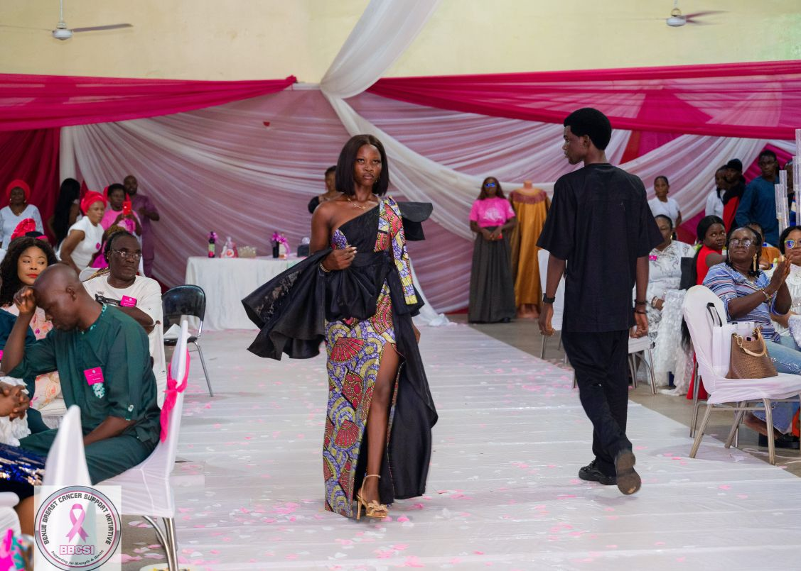
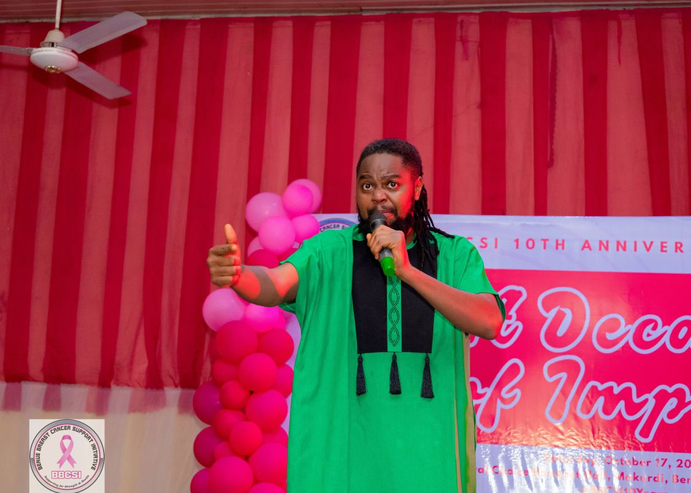
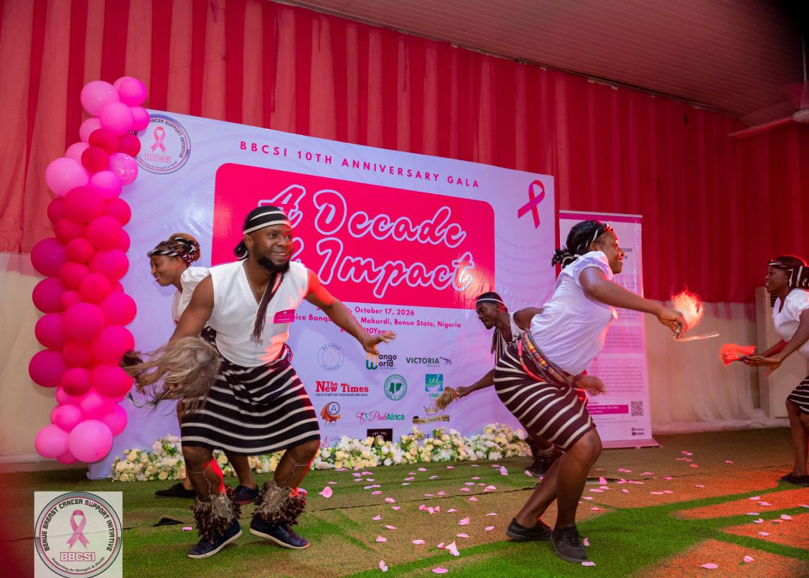
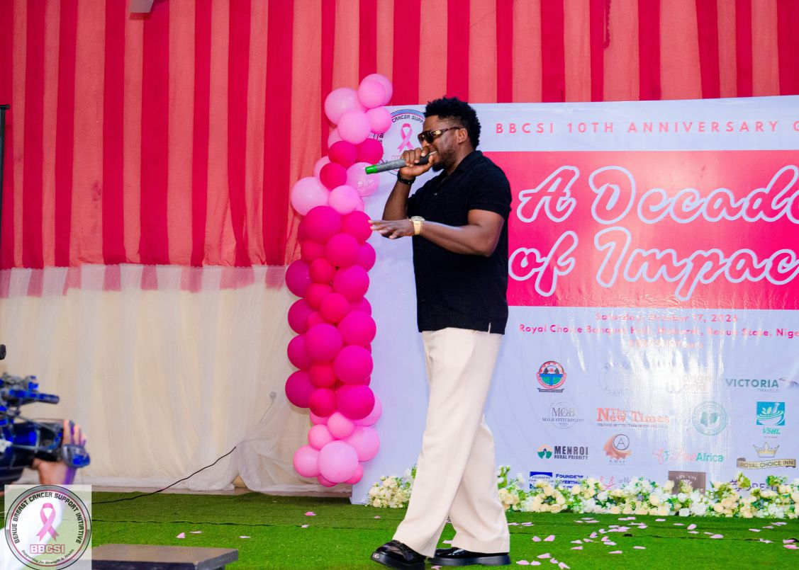
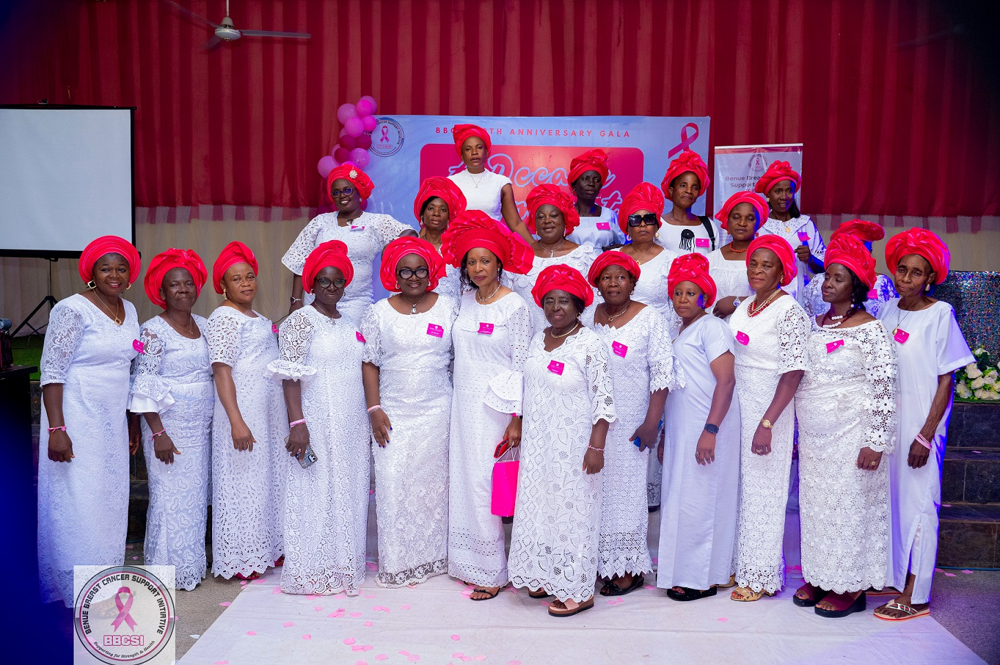

An Evening of Gratitude, Celebration and Remembrance
·
BBCSI
Communications Team

If the novelty football match earlier in the day brought out the sporting spirit in BBCSI, the evening belonged to elegance, gratitude, celebration and remembrance!
The Benue Breast Cancer Support Initiative (BBCSI) marked a major milestone in its 10-year journey with a memorable anniversary Gala Night, bringing together partners, supporters, friends, well-wishers and distinguished guests for an evening dedicated to celebrating achievements, appreciating invaluable contributions and honouring the lives of breast cancer survivors who are no longer with us.
It was an evening that beautifully captured the essence of BBCSI’s decade-long journey: a celebration of how far the organisation has come, an appreciation of those who made the journey possible and a renewed commitment to the work that lies ahead.
An Evening Beyond Expectations
The organisers had set an attendance target of 250 guests. However, the overwhelming support and enthusiasm of friends, partners and well-wishers saw the evening attract an impressive 335 guests! Surpassing the initial target was a heartwarming indication of the goodwill and support surrounding BBCSI and its mission.
The beautifully organised evening offered guests an opportunity to reconnect, network, celebrate friendships and reflect on the organisation’s contributions to breast cancer awareness, advocacy and support over the past decade. From the warm reception to the entertainment and sumptuous cuisine, every aspect of the evening contributed to an atmosphere of celebration and appreciation.

Celebrating Our Partners: Gratitude for a Decade of Support
A major highlight of the Gala Night was the opportunity to recognise and appreciate the partners, sponsors, individuals and organisations whose contributions have helped sustain BBCSI’s work.
The journey of an organisation committed to advocacy and community support is rarely undertaken alone. It takes generosity, collaboration, encouragement and the willingness of others to believe in a common vision.
The Gala Night provided a platform to acknowledge these invaluable contributions and celebrate the partnerships that have strengthened BBCSI over the years. Heartfelt speeches throughout the evening reflected on the organisation’s journey, its achievements, the challenges overcome and the importance of sustaining the fight against breast cancer.
A Feast of Flavours: Culinary Excellence by Madam Franca Uvah
Guests were treated to an exceptional culinary experience, thanks to the generous sponsorship of Madam Franca Uvah, who sponsored the evening’s great cuisine. The sumptuous food added a special touch to the celebration, ensuring that guests enjoyed not just an evening of meaningful conversations and entertainment but also a memorable dining experience. BBCSI deeply appreciates Madam Uvah’s generosity and contribution to making the Gala Night a delightful occasion.
Giving Back Through the Silent Auction and Raffle Draw
The evening also featured an exciting silent auction and raffle draw, adding an interactive and philanthropic dimension to the celebration. These activities were made possible through generous donations of auction and raffle items from:
- Amor Initiatives
- Beyond Uganda
- Royal Choice Hotels
- Mango World
- Zaginas Hotels
- Director Nguhemen Atedze
- Kaase
BBCSI expresses sincere appreciation to all the donors for their generosity and willingness to support the anniversary celebration. Their contributions added excitement to the evening while reinforcing the spirit of giving and collective responsibility that has sustained the organisation’s mission.




Fashion, Culture and Entertainment: A Night to Remember!
The Gala Night was not all speeches and formalities. It was also a spectacular celebration of creativity, culture and entertainment.
A Fashion Statement by MOB
One of the evening’s major attractions was a captivating fashion show presented by MOB under the able leadership of Dr. Patience Abidoye. The fashion presentation brought glamour, creativity and style to the occasion, adding an exciting dimension to the night’s festivities. BBCSI appreciates Dr. Abidoye and the MOB team for bringing their creativity and talent to the celebration. Read more about the MOB partnership.
Laughter Unlimited with Pastor Nicodemus
Guests were treated to generous doses of laughter as comedian Pastor Nicodemus took the stage. His entertaining performance brought smiles and laughter to the audience, providing a refreshing break from the formal proceedings and making the evening even more enjoyable.
Celebrating Our Cultural Heritage with the Ebony Group
The cultural dimension of the evening came alive through a captivating traditional dance performance by the Ebony Group. Their presentation celebrated the richness of our cultural heritage and added colour, rhythm and energy to the occasion.
A Musical Treat by O.D. Woods
Adding to the entertainment was a solo musical performance by O.D. Woods, who treated guests to a special musical experience. Together, these performances created an atmosphere of joy, excitement and celebration that kept guests engaged throughout the evening.
Remembering Our Fallen Breast Cancer Warriors
Beyond the glamour, entertainment and celebration, the Gala Night also carried a deeply emotional significance. It was an opportunity to remember the breast cancer survivors who, despite their courage and determination, eventually lost their lives to the disease. Their stories remain an important part of BBCSI’s history and serve as a constant reminder of why the organisation’s work matters.
As we celebrated ten years of advocacy, we also acknowledged the lives touched, the battles fought and the precious memories of those who are no longer here to celebrate with us. They may be gone, but their stories continue to inspire our commitment to awareness, early detection, support and improved access to breast cancer care.
We remember them.
We honour their courage.
We celebrate their lives.
And we remain committed to ensuring that more women have the opportunity to survive and thrive.

Ten Years of Impact: Celebrating Yesterday, Inspiring Tomorrow
The Gala Night was more than an anniversary party. It was a celebration of resilience, partnerships, generosity and the collective determination to make a difference. From the 335 guests who came out to celebrate, to the sponsors and donors who made the evening possible, the entertainers who brought joy to the occasion and the partners who have supported BBCSI’s mission, everyone contributed to making the night memorable.
As BBCSI looks towards another decade, the organisation remains grateful for the people and institutions that have walked this journey with us. The first ten years have been a story of courage, compassion, advocacy and hope. The next chapter promises renewed determination to reach more communities, support more women and strengthen the fight against breast cancer.
Ten years of making a difference.
Ten years of standing together.
Ten years of celebrating survivors and remembering those we have lost.
And the journey continues!